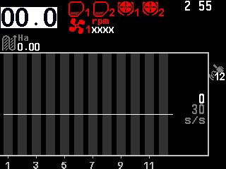

Réglages des capteurs
Comment accéder aux réglages d'un capteur du Hectare Mini, ce que contient chaque menu contextuel, quels réglages sont communs à un groupe et quels étalonnages existent.
Chaque capteur, moteur et actionneur possède son propre menu contextuel : son écran d'état, ses paramètres et, pour certains, un étalonnage. Les paramètres de chaque type de capteur figurent dans les rubriques qui suivent.
Accéder à un capteur
Sur l'écran d'accueil, maintenez « MENU » enfoncé jusqu'à ce que l'indicateur de vitesse passe sur fond blanc. Le boîtier est en mode de réglage des capteurs. Relâchez la touche.

Le mode de réglage des capteurs, capteur de vitesse sélectionné. Sélectionnez le capteur avec « UP » / « DOWN ». Un capteur de graines ou d'engrais sélectionné affiche son numéro sous la colonne, sur fond blanc.
Appuyez sur « MENU ». Le menu contextuel du capteur sélectionné s'ouvre.
Modifiez une valeur avec « UP » / « DOWN » et « PLUS » / « MINUS », comme dans tout menu. « BACK » ferme le menu contextuel ; un nouvel appui sur « BACK » quitte le mode de réglage des capteurs.
Ce que contient le menu contextuel dépend du type de capteur, de la machine et du niveau d'accès. Un paramètre que vous ne voyez pas est soit au-dessus de votre niveau, soit sans objet — la rubrique de chaque capteur le précise.
Le menu contextuel

- « Information » — ouvre l'écran d'état de ce capteur. Chaque menu contextuel commence par elle. L'écran d'état d'un capteur
- Une action propre à ce type de capteur — ici « Speed calibration » (étalonnage de la vitesse). Un capteur de doseur a à la place « Dispenser calibration(weight) » ; les capteurs de graines et d'engrais ont « Product application » (application du produit).
- Un paramètre — ici « Pulses » (impulsions) du capteur de vitesse.
- Sa valeur. Sélectionnez la ligne ; la valeur se trouve entre − et + et se modifie avec « MINUS » / « PLUS ».
- Barre de défilement. D'autres paramètres suivent ; la dernière rubrique est « Reset to defaults » (valeurs par défaut).
« Reset to defaults » remet les paramètres de ce capteur à leurs valeurs d'usine. Elle exige le niveau « Service » (service après-vente) et agit aussitôt, sans demander.
Le menu contextuel atteint depuis l'écran d'état avec « MENU » a pour première rubrique « Disable control » ou « Enable control » à la place de « Information » — voir Mettre un capteur sous ou hors surveillance.
Un jeu pour un groupe, ou un jeu par capteur
| Capteurs | Réglages |
|---|---|
| Capteurs de graines | Un seul jeu pour tous. Modifiez-le sur n'importe quel capteur de graines — il s'applique à tous. Seule « Product application » se règle ligne par ligne. |
| Capteurs d'engrais | Un seul jeu pour tous les capteurs d'engrais, distinct de celui des capteurs de graines. « Product application » ligne par ligne. |
| Tous les autres capteurs | Chaque capteur a ses propres réglages — réglez chaque capteur de doseur, de turbine ou de pression séparément. |
Étalonnages
| Ce qu'il corrige | Où | Niveau | Machine |
|---|---|---|---|
| Vitesse d'avancement — « Factor, % » du capteur de vitesse, sur 100 m. Étalonner le capteur de vitesse | « Seeding machine parameters » → « Speed calibration », ou menu contextuel du capteur de vitesse | Agronomist ; depuis le menu contextuel aussi Operator avec un code PIN | roule sur 100 m |
| Rotation du doseur — « Wheel, pulses » par rapport à « Dispenser pulses ». Étalonner la rotation du doseur | « Seeding machine parameters » → « Dispenser calibration » | Agronomist | roue d'entraînement tournée |
| Doseur au poids — « Weight, gr » et « Weight, pulses ». Étalonner le doseur au poids | menu contextuel du capteur de doseur → « Dispenser calibration(weight) » | Operator | à l'arrêt |
| Moteur de doseur au poids. Étalonner un moteur au poids | menu contextuel du moteur | Operator | à l'arrêt |
Les deux étalonnages au poids sont au niveau « Operator » (opérateur) parce qu'il faut les refaire chaque fois que le produit change.
Les types de capteurs
Capteur de vitesse · Capteurs de graines et d'engrais · Capteur de doseur · Capteur de turbine · Capteur de pression · Capteurs de trémie et de position de travail · Capteurs du moteur · Capteurs de traceur · Moteurs de doseur
Votre machine fait quelque chose que cette page n'explique pas ? Écrivez à support@agriwelt.com — un ingénieur vous répond.